Introducing the Default Model
As we said, the model in SunRiZe is changeable so we call
the model : “the default model”.
However the default model, that is vaguely inspired to UML
but is NOT UML, it is a good starting point to design
firmware and software for small devices efficiently.
Modules
In the Main Context toolbar there are two symbols :
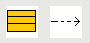
The first is the Module symbol, the second one is used to
determine the Dependencies among modules.
A Module is the basic unit in the model, and represents a
“real” piece of code (in C language, two pieces of code, .h
and .c ).
In the SunRiZe graphics environment a Module is
considered a “Primary – Stand-Alone object” that is an object
that does not depends from other objects and can contain optionally
a sub–context that is the FSM.
From the point of view of the object oriented programming instead
you can think to a Module as a unique static instance of a
class with the own methods and attributes.
To place a Stand-Alone object, select it from the ToolBar
and place it freely into the drawing area, in this case the Main
Context :
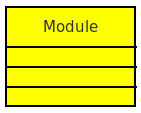Part of the module code is auto-generated by the
module and part must be edited with a simple editor (or an IDE)
directly in the source files.
When the code is regenerated, SunRiZe will take care to
preserve certain pieces of code, using a keywords based
technique.
Clicking twice on the module in the drawing area, we can open the Module
Editing Dialog Box :
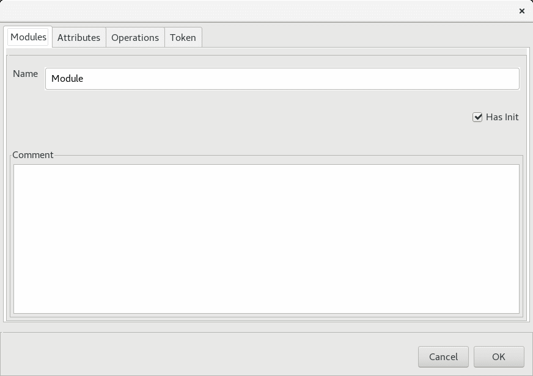This is a four tabs dialog box, which allows to
describe the Module properties, and particularly :
- Attributes
- Operations
- Tokens
Despite the basic code generator uses the C language that is
not natively object oriented, SunRiZe implements some of the
typical characteristics of the object oriented programming, as the overloading,
the attributes/operations visibility and the presence of a initializer
or constructor.
The Attributes are implemented as global variables : the Private
Attributes are defined “static” and the Public
Attributes are referenced in the header file.
We can find the same behavior for the Operations that are
simple C functions working on the local variables in the
modules (remember that all the instances are single).
This kind of implementation does not impact on the functionality of
the model, and at the same time avoid the usage of the data
structures typical of the C++ language and the related
pointers and furthermore, it does not require any kind of dynamic
allocation.
The trans-module overloading property is introduced for
Public Attributes and Operations, because they are always defined
and linked as :
<Module Name>_<Attribute / Operation Name>
For example a public operation sum inside the module Calc is
always referred as Calc_sum ( ) that is similar to the
object oriented call of Calc.sum().
The same function locally in the module where is defined, is then
“aliased” as sum( ).
The Tokens instead are not related to the object oriented
programming but are inspired to the Petri Net Transitions .
They are global counters which can be limited, raised and
eventually enclosed in specific public operations and they are used
to define a specific kind of transitions in the Finite State
Machine.
Modules Dependencies
In SunRiZe a dependency is defined as a “Junction” object,
that requires the existence of two standalone (and compatible)
objects to be placed in the drawn.
After created two modules, you can select the symbol from in the ToolBar
And place it between the Source and the Destination
.
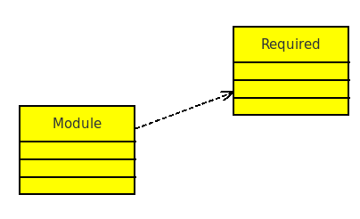
By placing the Dependency, we are saying that Module
depends from Required.
This connection has two immediate effects :
- The header file of Required is included into the body file of
Module .
- The initialization order of the modules can change.
The initialization order of the modules tries to follow the
dependencies schema so that Required will be initialized
before Module.
This order that is determined by a DSF algorithm, obviously
fails for modules connected by cyclic dependencies.
Finite State Machine
With SunRiZe we can create three types of modules :
- Free code without an initializer, that are usually used as
libraries or independent pieces of code.
- Module with an initializer, used to define real objects, for
example a specific timer o serial port which must be
initialized.
- The Finite State Machines , used to implements the algorithmic
parts running in non-preemptive multitasking.
In this chapter we discuss the features and the behavior of the Finite
State Machines.
Each Module can include a single Finite State Machine
(briefly FSM) that is implemented by several attributes and a run
function.
To insert a FSM into a Module , we need to keeping selected
the module and then press Ins .
This command creates/changes the drawing area to the module local
context that is the FSM.
The Tool-bar also changes to the FSM toolbar :
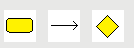
Showing the objects that can be placed in the FSM context
that are respectively :
- States
- Transitions
- Branches
There is another object that is the Initial State which
can’t be placed because it is unique, non-removable and already
present in the drawing as a big black spot.
We can build the FSM starting from this point.
States and Transitions
A Finite State Machine is essentially composed by States
and Transitions.
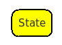
The States are Standalone Objects and can be freely
placed and moved on the drawing area.
A machine can jump from a state to another when some kind of
Event happens, this is done by placing a junction
between states of type Transition :
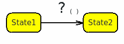
In SunRize we have 3 types of Events :
Conditions
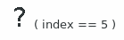
The transition shots when a particular condition is detected. A
condition is a counter-less situation that is always considered.
Timers
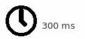
The transition shots after a certain amount of time from the
previous transition.
Tokens
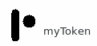
The transition shots when someone, somewhere , raises the token or
calls a proper module method which does the same thing.
Shooting
When a transition shots, three blocks of codes are executed
in this order :
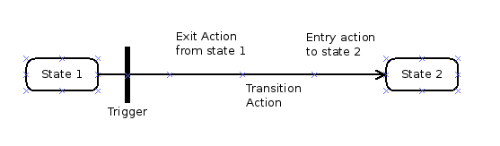
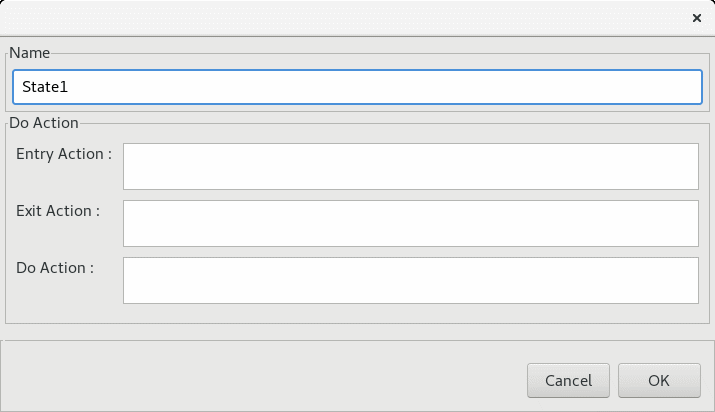These blocks of code are related to the two states
and the transition, we can set them by opening with a double
click the State Editing Dialog Box :
And the Transition Editing Dialog Box :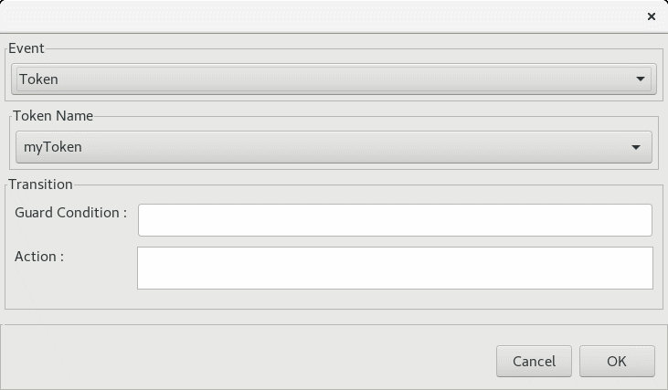
In these dialog boxes we can also recognize a couple of elements
that are :
The Do Action associated to the state that is executed
continuously in an open loop while the system is remaining in that
states.
The Guard Condition that is strictly related to the Token
event and blocks the execution of a transition if the guard is not
satisfied.
Branches
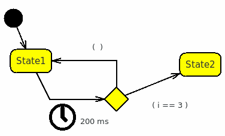
A Branch is used to change the destination of a transition
upon a specific condition.
In this case for example, after 200ms the transition shots but the
destination is State2 only if i==3 , if i!=3 the default branch
(without a condition) creates an auto-loop on State1.